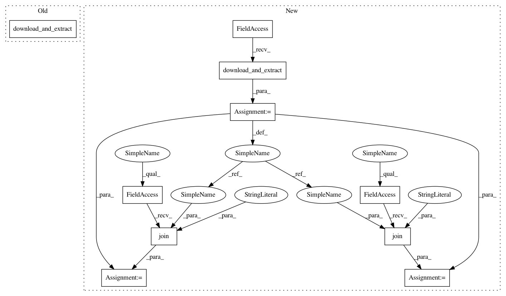

bb50a8a14130c1dc9cdd9db31c3cd4dcc97b9c5e,Examples/WOS-5736.py,,,#,19
Before Change
if __name__ == "__main__":
WOS.download_and_extract()
fname = "./Data_WOS/WebOfScience/WOS5736/X.txt"
fnamek = "./Data_WOS/WebOfScience/WOS5736/Y.txt"
with open(fname, encoding="utf-8") as f:
content = f.readlines()
After Change
if __name__ == "__main__":
path_WOS = WOS.download_and_extract()
fname = os.path.join(path_WOS,"WebOfScience/WOS5736/X.txt")
fnamek = os.path.join(path_WOS,"WebOfScience/WOS5736/Y.txt")
with open(fname, encoding="utf-8") as f:
content = f.readlines()
content = [txt.text_cleaner(x) for x in content]
with open(fnamek) as fk:
In pattern: SUPERPATTERN
Frequency: 3
Non-data size: 10
Instances
Project Name: kk7nc/RMDL
Commit Name: bb50a8a14130c1dc9cdd9db31c3cd4dcc97b9c5e
Time: 2018-03-22
Author: kk7nc@virginia.edu
File Name: Examples/WOS-5736.py
Class Name:
Method Name:
Project Name: kk7nc/RMDL
Commit Name: bb50a8a14130c1dc9cdd9db31c3cd4dcc97b9c5e
Time: 2018-03-22
Author: kk7nc@virginia.edu
File Name: Examples/WOS-5736.py
Class Name:
Method Name:
Project Name: kk7nc/RMDL
Commit Name: bb50a8a14130c1dc9cdd9db31c3cd4dcc97b9c5e
Time: 2018-03-22
Author: kk7nc@virginia.edu
File Name: Examples/WOS-11967.py
Class Name:
Method Name:
Project Name: kk7nc/RMDL
Commit Name: bb50a8a14130c1dc9cdd9db31c3cd4dcc97b9c5e
Time: 2018-03-22
Author: kk7nc@virginia.edu
File Name: Examples/WOS-46985.py
Class Name:
Method Name: